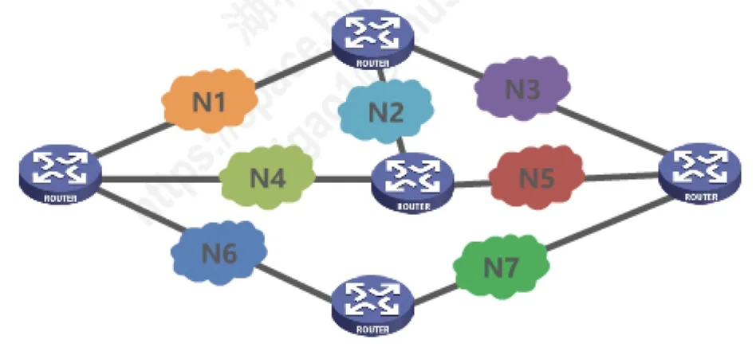
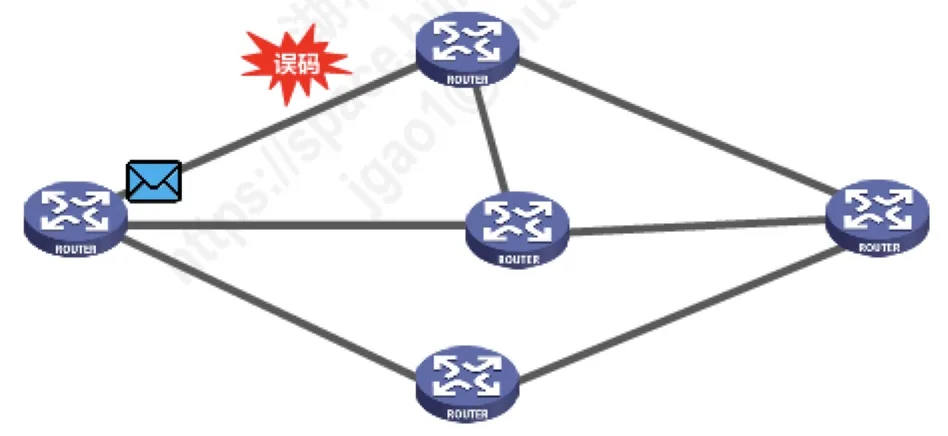
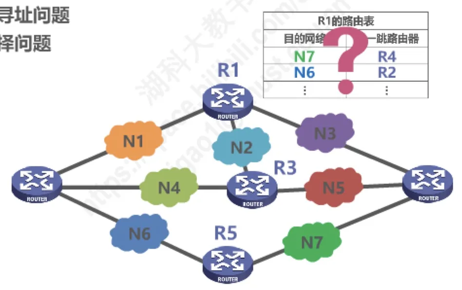

计算机通信与网络 · 第 4 章 网络层
4.1 网络层概述
第 3 章解决的是「同一个网络内部怎么把帧送到对端」，从本章起我们要跨出单个网络。网络层的任务是把许多异构的网络互连起来，让数据包能够在任意两个网络之间穿梭。本节先给出这一任务的完整表述，再拆出它必须解决的三个基本问题——向运输层提供什么服务、如何寻址、如何选路，最后说明为什么本课程的部分内容锁定在 TCP/IP 协议栈的网际层来讲。
1. 网络层的主要任务
网络层的主要任务是实现网络互连，进而实现数据包在各网络之间的传输。
这句话里有两个层次：先「互连」，再「传输」。图中给出的正是这样一个场景——N1 到 N7 是若干个彼此独立的网络，它们各自使用自己的技术和编址方式，中间由多台路由器把它们连接起来。正是因为有了网络层，一台主机发出的数据包才能穿过这些互不相识的网络，最终到达另一个网络中的目的主机。

2. 要实现网络层任务，需要解决的三个主要问题
把上面这个任务落到实处，网络层必须回答以下三个主要问题：
- 网络层向运输层提供怎样的服务（「可靠传输」还是「不可靠传输」）；
- 网络层寻址问题；
- 路由选择问题。
（1）向运输层提供怎样的服务
数据包在传输过程中可能遇到各种情况：链路噪声会造成误码，路由器拥塞时可能把来不及转发的数据包丢弃，不同的数据包还可能走不同的路径而失序到达。面对这些问题，网络层有两种截然不同的态度：
- 由网络层自己负责可靠传输——发现差错就纠正、丢失就重传、失序就重组，使上层看到一条可靠的通路；
- 或者网络层只做不可靠传输——尽力而为地转发，出错或丢失交给上层（运输层）去处理。
这两种选择会塑造出完全不同的网络体系，正是下一节 4.2「网络层提供的两种服务」要讨论的内容。

（2）网络层寻址问题
要在多个网络之间传送数据包，就必须有一套能在全网范围内唯一标识主机的地址体系。回忆 3.7.2 节的结论：MAC 地址只在同一个网络（广播域）内有意义，不具备区分不同网络的功能；要在互连的众多网络中找到目的主机，就必须使用网络层的 IP 地址。图中每个网络接口上都标注了 IP 地址（如 192.168.0.1、192.168.0.2、172.16.0.1、10.1.2.3 等），这正是网络层寻址的体现：地址中的一部分标识网络，一部分标识该网络中的主机。IPv4 地址的编址方法将在 4.3 节详细展开。
（3）路由选择问题
知道了目的地址还不够，数据包还得知道「下一步该往哪儿走」。网络由多台路由器连接而成，从一个网络到另一个网络往往存在多条路径：选择哪条路径、经由哪些路由器，就是路由选择问题。
路由器实现路由选择的依据是路由表。下面这张图给出了路由器 R1 的路由表，表中记录的是「目的网络 → 下一跳路由器」的对应关系：到达某个目的网络时，R1 应当把数据包交给哪一台下一跳路由器。例如图中给出通往 N7 的下一跳为 R4。有了这样一张表，每台路由器只需做本地决策——把数据包交给合适的下一跳，一棒接一棒地传下去，数据包就能抵达目的网络。路由表的建立与维护（路由选择协议）将在 4.6 节讨论。

3. 为什么从 TCP/IP 的网际层学起
因特网（Internet）是目前全世界用户数量最多的互联网，它使用 TCP/IP 协议栈。由于 TCP/IP 协议栈的网络层使用网际协议 IP，而 IP 是整个协议栈的核心协议，因此在 TCP/IP 协议栈中，网络层常称为网际层。
综上所述，我们通过学习 TCP/IP 协议栈的网际层来学习网络层的理论知识和实践技术。协议栈的分层关系如下：
- 应用层：各种应用层协议（HTTP、FTP、SMTP 等）；
- 运输层：TCP、UDP；
- 网际层：IP 为核心，此外还有 ICMP、IGMP，以及与 IP 配合完成地址解析的 ARP；
- 网络接口层：各种网络接口。
本节小结
- 网络层的主要任务是实现网络互连，进而实现数据包在各网络之间的传输；
- 要完成这一任务必须解决三个主要问题：向运输层提供怎样的服务（可靠传输还是不可靠传输）、网络层寻址问题、路由选择问题；
- 服务选择上存在两种态度：由网络层负责可靠传输，或只做不可靠传输而把差错与丢失交给上层处理，这将由 4.2 节的两种服务展开；
- 寻址必须使用能在全网唯一标识主机的网络层地址（IP 地址），因为 MAC 地址不具备区分不同网络的功能，具体编址方法见 4.3 节；
- 路由选择依靠路由器中的路由表（目的网络 → 下一跳路由器），逐跳转发即可把数据包送到目的网络，路由表的建立见 4.6 节；
- 因特网使用 TCP/IP 协议栈，其网络层以 IP 为核心协议，故称为网际层，本课程正是通过学习网际层来掌握网络层的理论与技术。